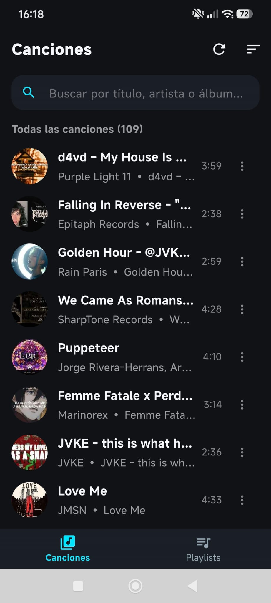
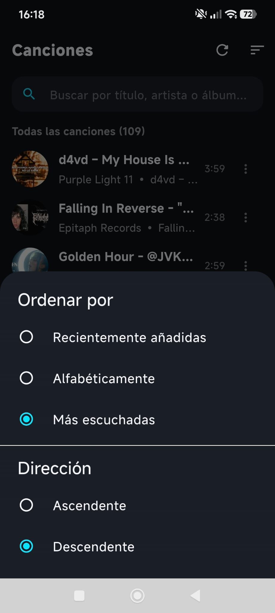
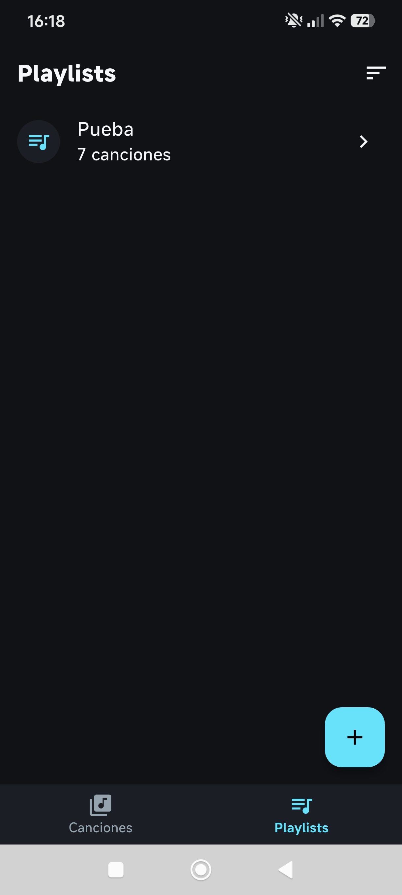
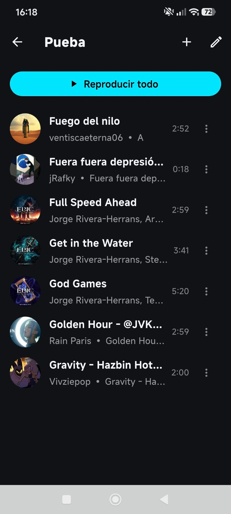
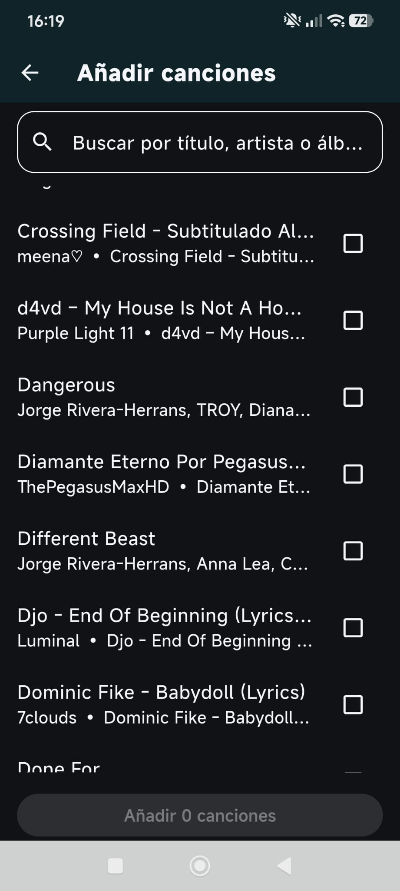

PZukko Player
MóvilReproductor de música local para Android, diseñado para ofrecer una experiencia limpia, rápida y sin distracciones, centrada en la biblioteca musical y las playlists del usuario. Es una app local-first: no requiere cuenta, no incluye anuncios, no consume datos y respeta la privacidad.
- Biblioteca local mediante MediaStore, reproducción en segundo plano y controles desde la pantalla de bloqueo.
- Playlists, buscador en tiempo real, ordenación avanzada y contador de reproducciones.
- Carga diferida y caché de portadas con concurrencia limitada para evitar bloqueos con bibliotecas de 500+ canciones.
- Notificaciones compatibles con Android 13+, HyperOS y Foreground Services de Android 14/16.
- Estado optimista con Riverpod y estrategia de caché para resolver limitaciones de librerías nativas.
FlutterDartRiverpodjust_audioKotlinAndroid
[TODO: añade el enlace a la demo o repositorio]